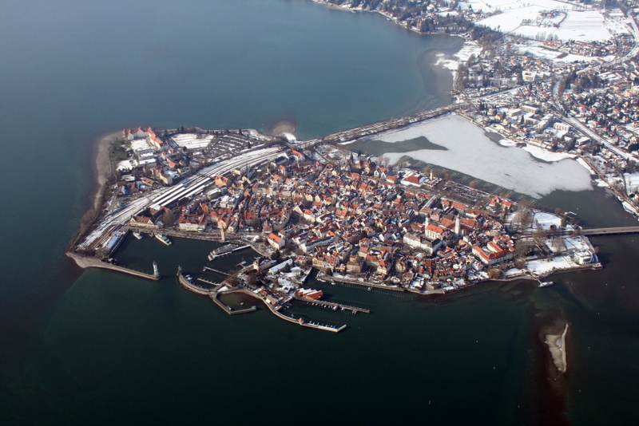

What is Lindau
Lindau is where our friends Ainhoa and Sergi live.
Lindau is a major town and island on the eastern side of Lake Constance (Bodensee in German) in Bavaria, Germany. It is the capital of the county (Landkreis) of Lindau, Bavaria and is near the borders of the Austrian state of Vorarlberg and the Swiss cantons of St. Gallen and Thurgau. The coat of arms of Lindau town is a linden tree, referring to the supposed origin of the town's name (Linde means linden tree in German). The historic town of Lindau is located on the 0.68-square-kilometre (0.26 sq mi) island of the same name which is connected with the mainland by a road bridge and a railway dam leading to Lindau station.
The first use of the name Lindau was documented in 882 by a monk from St. Gallen, stating that Adalbert (count of Raetia) had founded a nunnery on the island. However the remains of an early Roman settlement dating back to the 1st century have been found in the district of Aeschach. In 1180, St. Stephan's church was founded. In 1224 the Franciscans founded a monastery on the island. In 1274/75 Lindau became an Imperial Free City under King Rudolf I. In 1430, about 15 of Lindau's Jews were burned at the stake after being accused of murdering a Christian child.[3][4] In 1528, Lindau accepted the Protestant Reformation, following the Tetrapolitan Confession at first and subsequently the Augsburg Confession. In 1655, after the Thirty Years' War, the first Lindauer Kinderfest (children's festival) was held, in memory of the war. This festival, introduced by Councillor Valentin Heider, still makes up an important part of the town's identity.